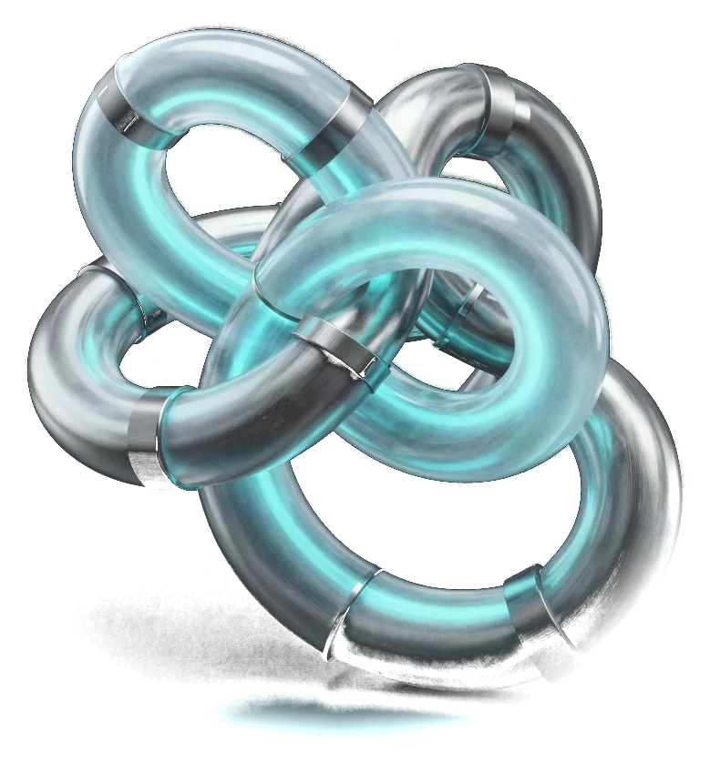

01 · Workflows
Every repetitive task is a decision waiting to be automated.
AI automation specialist · workflows, agents, integrations
01 · Workflows
Every repetitive task is a decision waiting to be automated.
02 · AI agents
Good agents don't replace your team. They give it back its time.

03 · Data
Capture it once. Let it flow everywhere it's needed.
04 · Integrations
Your tools already talk. I teach them to work together.
About
I'm Joey, an AI automation specialist. For 3 years I've helped founders, agencies and lean teams replace manual work with workflows, AI agents and integrations that are reliable, documented and easy to own.
I start with where your hours actually go, then build the smallest system that gives them back. No black boxes: you get clear logic, monitoring, and a team that understands how it works.
Tool stack
Services
Connect your apps and remove the copy-paste: lead routing, onboarding, invoicing, reporting.
n8n · Make · Zapier · Python
Assistants that answer customers, qualify leads and handle internal requests, grounded in your data and handing off to people when it matters.
Claude / OpenAI APIs · n8n · Node.js
Clean pipelines, automated follow-ups and reliable data in GoHighLevel or HubSpot, wired into the rest of your stack.
GoHighLevel · HubSpot · Webhooks · APIs
Fast, conversion-focused websites and web apps that plug straight into your automations from day one.
React · JavaScript · Node.js
A clear map of what to automate first, then monitoring and fixes so your systems keep running.
Process mapping · Monitoring · Docs
Process
Find where the hours go and what they cost.
Map the workflow and agree on the result we're aiming for.
Ship in weeks, tested on your real data.
Docs, training and monitoring so you own it.
Case Studies
Real estate brokerage · 12 agents
E-commerce brand · DTC
Marketing agency · B2B
Contact
Book a free 30-minute audit. You'll leave with a shortlist of what to automate first, whether we work together or not.
Book a Free Automation Audit